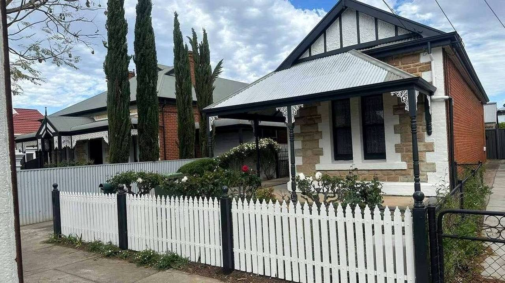
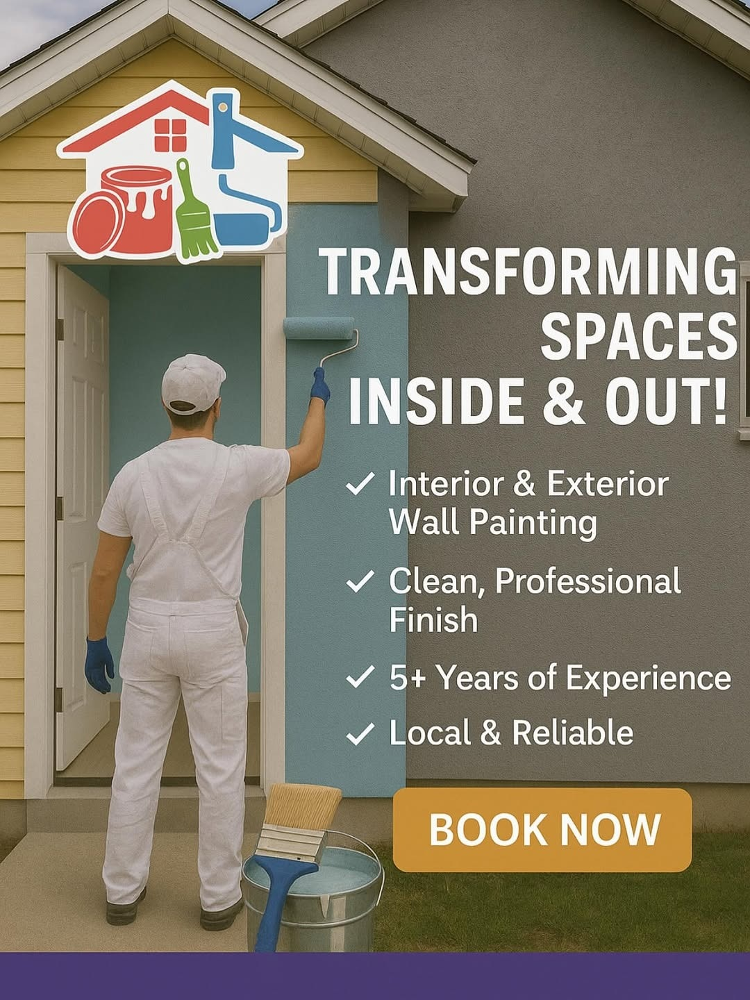
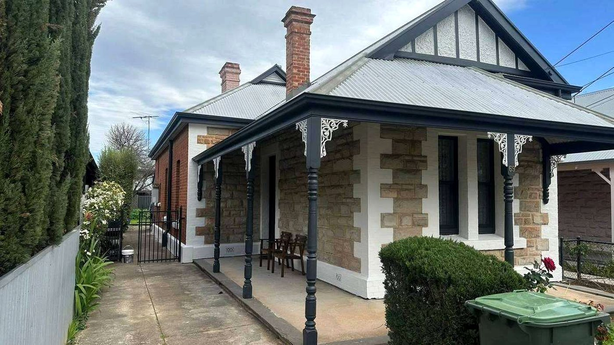
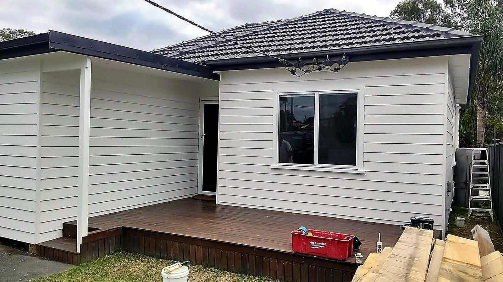
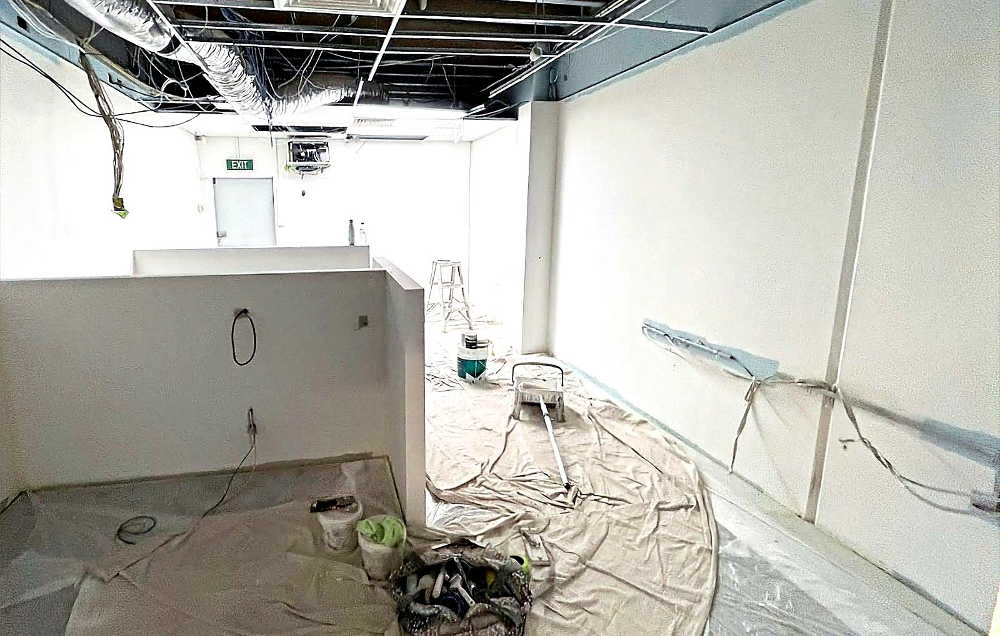

Interior repaints
Walls, ceilings, cornice, architraves and doors. Patching and sanding done first, then a uniform finish with clean cut lines.
Interior and exterior painting, full repaints and spray finishing. Surfaces are repaired, sanded and primed properly first — that is what keeps a finish looking right years later, not the topcoat.

Most painting problems are preparation problems wearing a topcoat. Each job is quoted on what the surface actually needs, not on a rate per square metre.
Walls, ceilings, cornice, architraves and doors. Patching and sanding done first, then a uniform finish with clean cut lines.
Weatherboards, render, eaves and fascia. Preparation and the right primer for the substrate, because exterior failures are almost always adhesion.
Filling, sanding, patching, mould treatment and bare-timber priming — the stage that decides how the finish holds up.
Doors, cabinetry and trim sprayed for a flat, even coat with no brush marks, masked and de-masked as part of the job.
End-of-lease, pre-sale and insurance make-goods, where the deadline is fixed and the finish has to be right first time.
A cheap quote and a proper one usually differ in one place: how much time goes into the surface before the first coat.
Paint straight over the old surface, fill without sanding back, and skip the primer because it saves a day.
Wash, scrape, fill, sand, spot-prime and then coat — with drying times respected rather than compressed.
Paint does not hide a bad surface, it magnifies it. Once a wall is coated in a low-sheen finish, every ridge of unsanded filler and every raised edge of old paint shows up in raking light — and by then the only fix is to sand it back and start again.
So the prep is done as a stage in its own right: patched and left to cure, sanded flat, dusted down, and spot-primed where the surface is bare or porous. On exterior work that means treating mould and chalky paint before anything is applied, because a coating that cannot bond will fail no matter how good the product is.
Masking and protection are part of the same stage — floors covered, fittings removed where they can be, edges taped and then checked. It is slower than cutting in by eye, and it is the reason a finished room does not have a line of paint on the skirting.
Interior and exterior painting.




What needs painting, how many rooms or what exterior, and whether there is any repair work in it.
LLD Painting
Professional · Reliable · Quality finish
Call 0451 276 801 · form or Instagram